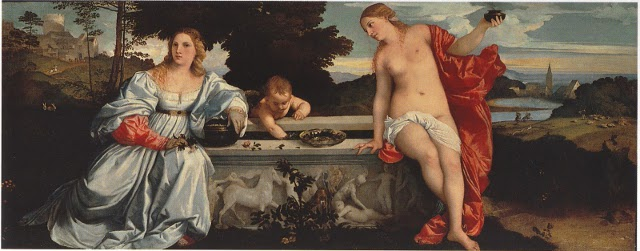

Designer & Biografia
leonardo.barbiero@gmail.com
Contenuti & Revisione
bottin.marco@gmail.com
 Validato CSS3
Validato CSS3
Amore Sacro e Profano1515 - Galleria Borghese, Roma In questo dipinto, Tiziano giovane, vuole celebrare l'Amore , nel dualismo di Sacro e Profano. Lo stemma impresso sul sarcofago-fontana è del patrizio veneziano Niccolò Aurelio. Quindi il committente dell'opera fu il patrizio veneziano,che forse la volle per offrirla come dono di nozze alla sua sposa, Laura Bagarotto, al fine di farsi perdonare di averle mandato a morte il padre. Poiché questa opera si riporta al matrimonio fra l'Aurelio e Laura Bagarotto, rientra tra i quadri così detti "d'occasione": il tema matrimoniale restringe perciò il campo dell'interpretazione allegorica. Nel suo saggio su Tiziano, la storica dell'arte, Rona Goffen, dà un'interpretazione "femminista": la donna vuol rappresentare la coincidenza tra "castità e sessualità" insita nel matrimonio e celebrata dal Maestro. Rifacendoci alle interpretazioni tradizionali si può tuttavia rilevare altre conclusioni: la donna vestita è la personificazione dell'Amore terreno;il vaso di preziosi vuole alludere alla felicità temporanea, quella cioè che si può avere durante la nostra effimera esistenza; la corona di mirto che si intravede tra i suoi capelli e i rametti di mirto che stringe nella mano, sono il simbolo di Venere ma anche della fedeltà coniugale; sullo sfondo, dietro di lei, si intravedono due conigli che simboleggiano la fertilità. Cupido, al centro del sarcofago-fontana, vuole simboleggiare che si tratta della sorgente dell'Amore. Le scene cruente che si vedono al centro del sarcofago, per alcuni rappresentano un'allusione alle tragiche vicende storiche della famiglia Bagarotto; da altri invece sono spiegate come scene di castigo, quel castigo con cui si deve punire e frenare la passione sensuale. Per altri ancora queste scene servono a capire che la donna vestita è Proserpina, dato che dalla parte sinistra del sarcofago si vede il ratto di Proserpina, mentre dall'altro lato Venere, soccorrendo Adone ferito da Marte, si punge un piede: chiari quindi sono i simboli di morte e di vita. Venere Urania rappresenta la felicità eterna, celestiale e l'Amore spirituale; il manto rosso e la fiaccola che arde nella sua mano, sono il simbolo della sua natura passionale. Sullo sfondo, alle sue spalle si vede una chiesa per sottolineare il carattere sacro della Venere celeste; il paesaggio è montuoso e per un sentiero si inerpica un cavaliere: questo per significare che il cammino per raggiungere la virtù suprema è lungo e faticoso. Secondo certe fonti la donna che raffigura Venere era Angela del Moro, detta Zanfetta, cortigiana dell'epoca, di nobili origini; era molto colta ed amica di uomini di lettere quali il Bembo e l'Aretino. Fece da modella a numerosi artisti fra i quali Tiziano. Sicuramente Tiziano si ispirò alla concezione neoplatonica di Marsilio Ficino, secondo la quale la bellezza terrena è specchio di quella celeste; si può notare che mentre l'Amore profano è quasi in penombra su di uno sfondo abbastanza cupo, l'Amore sacro è in piena luce e radioso nel suo mantello rosso. Questa è l'unica opera di Tiziano in chiave neoplatonica, corrente tipica dell'ambiente toscano contrapposto all'aristotelismo di Venezia. |
| Barbiero Leonardo
Designer & Biografia leonardo.barbiero@gmail.com |
Bottin Marco
Contenuti & Revisione bottin.marco@gmail.com |
Accessibilità
Validato CSS3
|